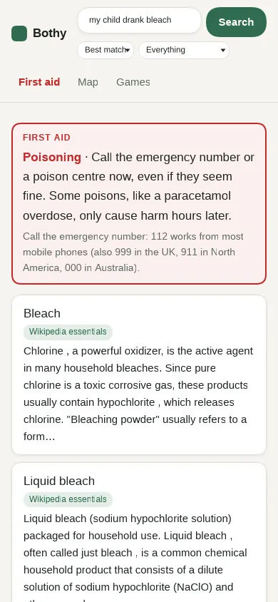
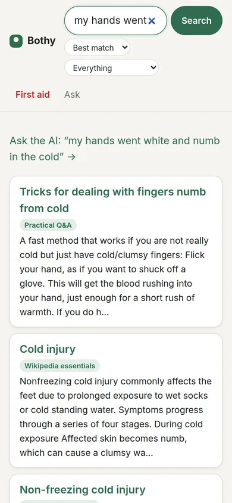
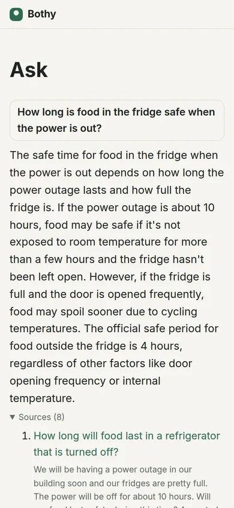
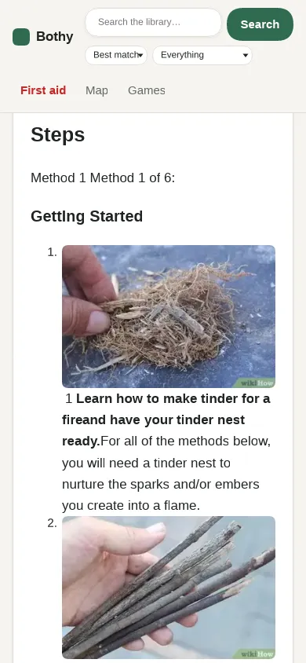
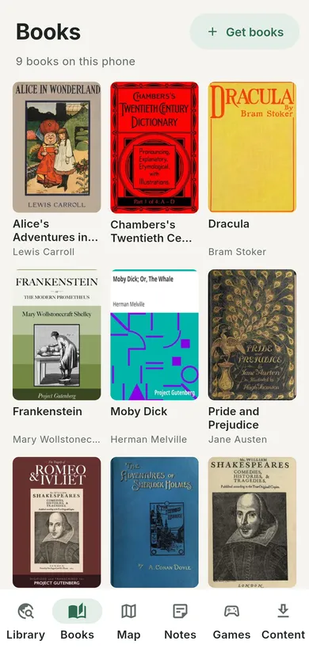
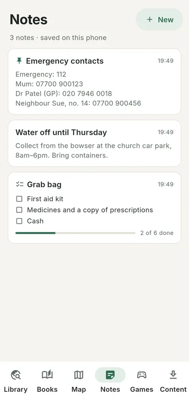
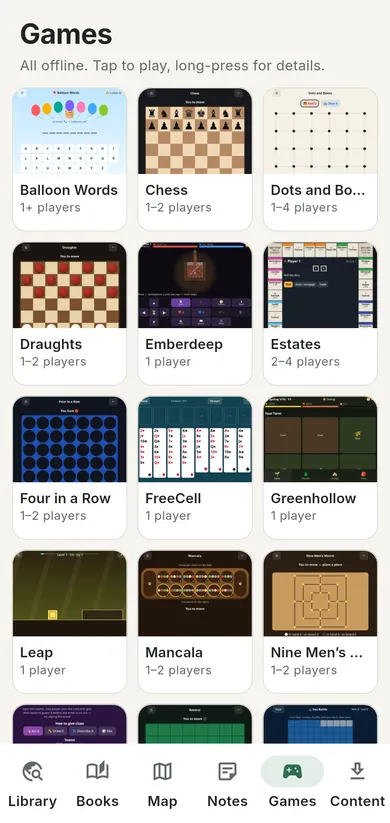

Stockpile knowledge, not just tins.
Bothy is a knowledge stockpile for your phone: first aid, survival and repair guides, Wikipedia, books and maps, with an AI that understands your questions. Download it while the internet works. When the power and the network go down, it's still there, and one phone can share it with the whole street.

The missing item in your emergency kit
Governments now ask every household to be ready for a few days without power, water or the internet, and many people have stocked up on water, food, torches and batteries. But in an emergency, what runs out first is knowing what to do: how to make water safe, treat a burn, keep food safe when the freezer stops, splint an arm, or fix the thing that just broke.
That knowledge used to be a search away. In a blackout it isn't. Bothy lets you stock up on it now, while the internet still works.
- It doesn't expire. No use-by dates, no rotating stock.
- It takes no cupboard space. A few gigabytes on a phone you already carry.
- It shares. One phone can serve everyone nearby, so one stockpile covers a street.
- It's free. Always, with no ads and no account.
Emergency kit
- Water for three days
- Food that keeps
- Torch and spare batteries
- Battery or wind-up radio
- First aid kit
- Power bank
- Knowing what to do with all of it Bothy
It understands what you mean
In an emergency nobody knows the right words. You type "my hands went white and numb in the cold", not "nonfreezing cold injury". Bothy's search reads for meaning, so it finds the article that answers you even when it shares none of your words.
Search by meaning
Every passage in the library was read by an AI model and stored as a fingerprint of what it means. Your question gets the same treatment on your phone, and Bothy finds the closest paragraphs. Ordinary keyword search runs alongside it and the two are combined, so exact names and numbers still match.
Opens at the answer
Results take you to the paragraph that matches, not just the top of a long article.
Answers in plain words
Ask a question and a small AI on the phone reads the best eight passages and writes an answer from them alone, with the sources listed so you can check. It's a small model, so treat it as a helper, not a doctor, and read the sources for doses and safety steps.
Made for a blackout
No cloud, no account, no signal. The AI models are part of the download and run on the phone's own processor, so they work from a power bank in a dark house, a tent or a cellar. One phone can share it all with everyone nearby.


Why "Bothy"?
A bothy is a simple shelter in the hills of Scotland, Wales and northern England. It is never locked, always free, and there for anyone who needs it.
This app is the same idea for knowledge. When the power is out, the mobile network is down, you are somewhere remote, or a storm has cut everything off, what you need to know should still be in your pocket. Bothy will always be free, with no ads, no accounts and no tracking.
What's inside
Everything is optional. Pick what fits your phone, from a few megabytes to a few gigabytes, and search all of it by keyword or by meaning.
First aid
Step-by-step cards for CPR, choking, bleeding, burns, stroke, poisoning, allergic reactions and more. Built into the app, so they work even with nothing downloaded.
Wikipedia essentials
The articles that matter when things go wrong: medicine, water, food, farming, energy, tools, hazards and the science behind them, with images. Chosen by AI from all of English Wikipedia.
How-to guides
wikiHow's practical guides for first aid, food, repair, outdoors and home, plus survival and emergency manuals (US Army, FEMA, WHO-ICRC, UK Be Ready).
Repair guides
iFixit's step-by-step guides, with photos, for phones, cars, appliances, tools and more.
Practical Q&A
Answered questions from Stack Exchange on outdoors, DIY, cooking, gardening, car repair, bicycles, ham radio, pets, parenting and more.
Appropriate technology
Appropedia's projects for water, energy, shelter, food and building with simple tools and local materials.
Books
Classic and public-domain books from Project Gutenberg, with a reader that remembers your place. Bring your own EPUBs too.
Offline maps
Streets, paths and places with search, all on the phone. No signal needed.
Ask a question
A small AI that runs on the phone and answers from the library's own articles, with the sources shown so you can check.
Notes
Phone numbers, checklists and anything you need to remember, kept on the phone and searchable.
Games
Chess, draughts, solitaire, sudoku, word and party games and more, for the long evenings.




131,000 articles, chosen from 7.2 million
All of English Wikipedia won't fit on most phones, and most of it won't help in a crisis. So Bothy keeps the articles that would: how to purify water, treat a burn, preserve food, fix a pump or tell an edible mushroom from a deadly one. Choosing them was a job for AI.
- Start with everything. All 7.2 million English Wikipedia articles.
- Set aside what can't help. About 3 million articles on people, films, music, TV, games, sport, battles and elections go first. In spot checks, the useful ones among them were inventors, and their inventions have articles of their own.
- An AI reads and scores. A large language model read the opening of 532,000 articles and scored each one for how useful it would be with no internet, no shops and no help on the way.
- A second AI scores the rest. A model trained on those scores predicted the usefulness of every remaining article from what its opening means. Its borderline picks went back to an AI for a second look.
- Keep what helps. Every article scored as useful stays in, plus widely read background articles. Rare species need a known use (food, medicine or danger) to make the cut.
- Test it. 931 realistic questions, written without seeing the selection, each with the article that answers it: from "how do I survive a power cut" to "my neighbour fell off his bike and his forearm looks bent at the wrong angle". The selection holds the answer to 98.7% of them.
wikiHow guides are picked by their own categories (first aid, disaster preparedness, food, farming, repair and more). Stack Exchange questions come from 15 practical sites.
Run a hub
A hub is a small computer, such as a Raspberry Pi, an old laptop or a mini PC, that serves Bothy over Wi-Fi to everyone nearby, all the time. Set one up in a village hall, a school, a library, a shelter, a boat or a cabin, and it becomes the place people turn to when the network goes down: the knowledge, the chat and the downloads, in one spot. It can hold the whole collection, including all 54,000 books.
In any browser
People connect to the hub's Wi-Fi and use the library, books, maps, games, first aid and chat in their browser, with no app needed. A mini PC hub can answer questions with AI too.
A noticeboard that talks back
The hub's chat becomes the area's message board: who needs help, who has spare supplies, where to go. Messages stay on the hub, so newcomers catch up.
Fills phones
Phones with the app download collections, maps and books from the hub in minutes, then carry them home and share them on.
Small and frugal
One program and a folder of packs. It runs from a power bank or a small solar panel.
One command with Docker on Windows, Mac, Linux, a Raspberry Pi or a NAS. 3 to 13 GB of space.
Also for the trail
The same things that help in a power cut help where there was never any signal: camping, hiking, sailing, a remote cottage or a long trip abroad.
Know what to do
First aid cards for hypothermia, heat illness, bleeding and fractures, and Wikipedia articles on edible and poisonous plants and fungi.
Learn skills on the spot
How-tos for knots, shelters, fires and safe water, and outdoor questions answered by experienced hikers and campers.
See where you are
The offline map shows your position from GPS, which works with no signal. Paths and places are on it, and you can search for places by name.
Share at camp
One phone can share the library, the map and the chat with the whole group around the fire.
Bothy goes alongside a paper map and compass, not instead of them. The maps cover the UK for now, with no routes or contour lines yet, and the AI answers use a lot of battery.
Get Bothy
Bothy is in testing. It will be on Google Play first, with a direct Android download here for phones without Google Play. On an iPhone, use Bothy from a hub or a sharing phone in your browser.
Questions
Does it really work with no internet?
Yes. Once you've downloaded what you want, everything (search, articles, maps, books, notes, games and the optional AI) runs on the phone. Downloading needs a Wi-Fi connection, to the internet or to a hub.
Does the AI need the internet?
No. Search by meaning and the AI answers run on your phone's own processor, from models you download once with the library. Nothing you ask leaves the phone. Written answers need a recent phone and an extra 700 MB download.
Can I trust the AI's answers?
Treat them as a starting point. The answering model is small enough to run on a phone, and it can misread a source or mix things up. It answers only from the library, and every answer lists its sources, so check them, especially for doses and safety steps. In an emergency, the first aid cards come first.
Is it really free?
Yes, and it will stay free: no ads, no subscriptions, no in-app purchases and no accounts. Some of the content's licences don't allow commercial use, and that suits us fine.
What does it know about me?
Nothing. Bothy has no accounts, no analytics and no tracking. Your notes and downloads stay on your phone. See the privacy policy.
Is the first aid advice reliable?
The cards follow published guidance from the Resuscitation Council UK, the European Resuscitation Council, the NHS, the British Red Cross and St John Ambulance, written plainly. They don't replace training or a doctor. They haven't yet been reviewed by a medical professional; a review is planned before release. If you can, always call the emergency number first: 112 works from most mobile phones (999 in the UK, 911 in North America, 000 in Australia).
How much space does it need?
As much or as little as you choose. The first aid cards and notes are built in. The largest collections are a few gigabytes with all their images, and most have a smaller text-only option.
Which languages?
English. You can add your own books in any language.
Where the knowledge comes from
Bothy stands on the work of thousands of volunteers. Every article shows its source, its licence and a link to the original.
| Source | Licence |
|---|---|
| Wikipedia | CC BY-SA 4.0 |
| wikiHow | CC BY-NC-SA 3.0 |
| iFixit | CC BY-NC-SA 3.0 |
| Stack Exchange (authors named on every question) | CC BY-SA 2.5 / 3.0 / 4.0 |
| Appropedia | CC BY-SA 4.0 |
| Project Gutenberg | Public domain in the United States; check your country's rules |
| OpenStreetMap map data | © OpenStreetMap contributors, ODbL 1.0 |
| US Army and FEMA guides | US government works, public domain |
| UK Be Ready | Open Government Licence v3.0 |
| WHO-ICRC Basic Emergency Care | CC BY-NC-SA 3.0 IGO |
Bothy's own code is open source under the GNU AGPL-3.0, on GitHub.
Bothy reads offline copies made by the Kiwix and openZIM projects. It isn't affiliated with or endorsed by any of these sources.